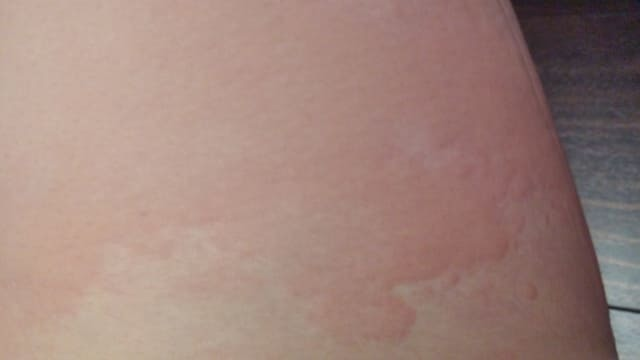

慢性単純性苔癬の鍼灸
繰り返し掻くことで皮膚が硬く厚くなり、強いかゆみの悪循環が続く慢性的な皮膚の炎症です。
まず知っておきたい要点と改善の流れ
慢性単純性苔癬は、皮膚の上層に慢性的な炎症が生じ、強いかゆみが続く状態です。最大の原因は長期間にわたり繰り返し皮膚を掻き続けることで、掻く刺激が新たなかゆみを呼び、さらに掻いてしまう悪循環に陥ります。衣類や髪の毛のこすれ、アクセサリーなどの物理的刺激や乾燥、他の皮膚炎がきっかけになることも多く、ストレスや不安による自律神経・免疫機能の乱れも症状悪化に関与すると考えられています。（公式解説）
このようなお悩みはありませんか？
- ✓首や腕・脚・頭皮など同じ場所を無意識に何度も掻いてしまう
- ✓掻き続けた部分の皮膚が硬く厚くなり黒ずんできた
- ✓ストレスや不安が強まるとかゆみが悪化する
- ✓皮膚の乾燥や衣類・髪のこすれでかゆみが再発しやすい
当院の施術アプローチ・改善の流れ
なぜ鍼灸で改善へ向かうのか？（作用機序の図解）
慢性単純性苔癬に対する鍼灸は、神経性炎症・掻痒（かゆみ）伝達と自律神経の鎮静機序を通じて、お体本来の回復力を引き出します。

湿疹・傷口への直接刺激を避け、曲池・血海・築賓・三陰交など全身の調整穴へアプローチします。
痒み感覚を伝える神経経路の過敏性を鎮め、「かゆい→掻く→悪化」の悪循環を断ちます。
交感神経の過緊張や夜間覚醒を和らげ、皮膚の修復が進みやすい血流と睡眠環境を整えます。
標準の保湿・外用・内服治療と協調し、ストレスや季節変化で悪化しにくい土台を支えます。
院長YouTube解説・関連動画
初めの段階では、皮膚の見た目は正常で痒みを感じる

慢性単純性苔癬は、体のあらゆる部位に起こることがあります。一般的に起きることの多い部位は、胸や背中の上部、腕、首、脚です。場合によっては、肛門や腟周辺に起こることもあります。
初めの段階では、皮膚の見た目は正常で、痒みを感じます。その後、痒みに対してかいたりこすったりすると、皮膚の見た目にも変化が現れます。乾燥したり、厚くなったり、暗い色の斑が現れたりするのです。
この皮膚の変化の過程は苔癬化と呼ばれています。
慢性単純性苔癬は、慢性的な炎症と皮膚の硬化が特徴的な皮膚の病気です。以下に、慢性単純性苔癬の症状について詳しく説明します。
・かゆみ
慢性単純性苔癬の主な症状は、かゆみです。かゆみが持続的に続くことで、無意識に掻いてしまうことがあります。これが悪循環を引き起こし、皮膚の状態が悪化することがあります。
・皮膚の硬化、肥厚
慢性的な炎症と掻痒行為が繰り返されることで、皮膚が硬くなり、肥厚化することがあります。皮膚表面には、正常な皮膚に比べて明らかに異なる皮膚状態が認められます。
・皮膚の色素沈着
慢性単純性苔癬が進行すると、皮膚の色素沈着が生じることがあります。これは、炎症や摩擦によって、皮膚にメラニン色素が沈着することが原因です。色素沈着により、皮膚が黒ずんで見えることがあります。
・皮膚の白癬化
炎症が改善すると、皮膚の白癬化が生じることがあります。白癬化とは、皮膚の表面が白く、粉状になる現象です。これは、慢性的な炎症によって皮膚の角質が過剰に生成されることが原因です。
・皮膚の破れや出血
慢性単純性苔癬が進行し、皮膚が硬く肥厚化すると、皮膚が破れやすくなることがあります。掻くことで皮膚が破れ、出血することがあります。これが感染のリスクを高めることがあります。
・慢性単純性苔癬の発生部位
慢性単純性苔癬は、主に手足、首、頭皮、背中、お尻、足の裏、陰部など、身体の様々な部位に発生することがあります。ただし、発生部位は個人差があり、生活習慣や体質によって変わることがあります。
・不安やストレスによる症状の悪化
慢性単純性苔癬の症状は、不安やストレスが原因で悪化することがあります。ストレスが症状を悪化させるメカニズムは完全には解明されていませんが、ストレスが自律神経や免疫機能に影響を与えることが関与していると考えられています。
・円形、楕円形の皮膚病変
慢性単純性苔癬では、円形や楕円形の皮膚病変が現れることがあります。これらの病変は、かゆみが特に強く感じられる部分であり、掻痒行為が繰り返されることでさらに皮膚状態が悪化することがあります。
・皮膚の乾燥
慢性単純性苔癬の症状として、皮膚の乾燥が挙げられます。皮膚のバリア機能が低下することで、皮膚が乾燥しやすくなります。乾燥は、かゆみを引き起こす要因となるため、慢性単純性苔癬の症状が悪化することがあります。
慢性単純性苔癬を改善するために1番大切なことは、かいたりこすったりしないことです。まず、かいたりこすったりする行為を完全にやめることが必要なのです。
痒みを和らげる方法としては、コルチコステロイドがあります。かいたりこすったりする行為をやめた後、コルチコレステロイドを使ってかゆみと炎症を和らげて、完全に痒みがなくなるまで改善に取り組みます。
場合によっては、抗ヒスタミン薬を使うこともあります。
慢性単純性苔癬は、慢性的な炎症と皮膚の硬化が特徴的な皮膚の病気です。この記事では、慢性単純性苔癬の改善法について詳しく説明します。
・トピカルステロイド
慢性単純性苔癬改善の第一選択肢は、トピカルステロイドです。ステロイド軟膏やクリームは、炎症を抑える作用があります。症状の重さに応じて、適切な強さのステロイド薬を処方します。ただし、ステロイド薬は長期間使用すると副作用があるため、医師の指示に従って使用することが重要です。
・非ステロイド性抗炎症薬
症状が軽度で、ステロイド薬が必要でない場合、非ステロイド性抗炎症薬が選択肢となります。NSAIDsは、炎症を抑える作用がありますが、ステロイド薬ほどの強い作用はありません。NSAIDsはクリームやローションの形で皮膚に塗布されます。
・抗ヒスタミン薬
慢性単純性苔癬の主な症状であるかゆみを緩和するために、抗ヒスタミン薬が使用されます。抗ヒスタミン薬は、アレルギー反応を抑制し、かゆみを和らげる作用があります。抗ヒスタミン薬は、錠剤やシロップの形で経口摂取されます。
・保湿剤
皮膚の乾燥が悪化の要因となることがあるため、慢性単純性苔癬の改善には保湿剤が重要です。保湿剤は、皮膚のバリア機能を改善し、皮膚の乾燥を防ぎます。保湿剤はクリームやローションの形で皮膚に塗布されます。
・硬化剤注射
皮膚の硬化部分に対して、硬化剤注射が適用される場合があります。この改善法では、皮膚の硬化部分に硬化剤を注入し、皮膚の硬化を緩和することを目的としています。硬化剤注射は、皮膚科医によって行われ、適切な麻酔下で実施されます。
・紫外線や光の利用
紫外線や光を利用して皮膚の炎症を抑制し、慢性単純性苔癬の症状を改善する方法があります。特定の波長の光を皮膚に照射することで、炎症を抑える効果があります。ただし、この方法は一部の人にしか適用されず、医師の判断によって実施されます。
・無意識的な掻痒行為の抑制
慢性単純性苔癬の悪循環を防ぐためには、無意識的な掻痒行為を抑制することが重要です。これには、爪を短く切る、寝るときに手袋を着用する、ストレス管理法を学ぶなどの方法があります。
・ストレス管理
慢性単純性苔癬の症状は、ストレスによって悪化することがあるため、ストレス管理が重要です。ストレス管理法には、リラクセーション技法、運動、十分な睡眠、バランスのとれた食事などが含まれます。
・カウンセリング
慢性単純性苔癬の改善方法一環として、カウンセリングなどが適用されることがあります。これは、ストレスや不安を軽減し、症状の悪化を防ぐことを目的としています。
慢性単純性苔癬は、他の皮膚の病気やアレルギーと併存することがあります。このような場合、併存症の改善が慢性単純性苔癬の症状改善に繋がることがあります。皮膚科医は、病歴や症状を慎重に評価し、適切な改善法を提案します。
慢性単純性苔癬の改善方法は多岐にわたり、個々の症状や体質に応じて適切な改善方法が選択されます。
慢性単純性苔癬は、洋服や髪の毛のこすれやネックレスなどの装飾品などの刺激が原因で痒みが起こり、痒い部分を何度もかくことで起きることも多いです。
日常生活を送る上で、痒みのきっかけになる刺激をできるだけ避けることは、予防のためにも改善のためにも大切です。刺激に敏感な人や乾燥しやすい人はより気をつけるようにすると良いでしょう。
何か心配なことがある場合は、皮膚科に行くことをお勧めいたします。
皮膚・アレルギー・帯状疱疹・脱毛症の全身ツボ図解
実際の施術ではお一人おひとりの体質・症状に合わせて選穴しますが、アトピー性皮膚炎・慢性蕁麻疹・帯状疱疹痛・円形脱毛症の全身調整の臨床でよく用いられる代表的なツボの目安です。

📌 代表的なツボの詳細一覧表を開く（6穴） ▼
| ツボ名 | 位置の目安 | 主な狙い | セルフケアの注意点 |
|---|---|---|---|
| 百会（ひゃくえ） | 頭頂部の中央 | 頭皮の微小循環（円形脱毛症等）とストレス性のかゆみ鎮静 | 皮膚に炎症や傷がある部位は避けて施術します。 |
| 曲池（きょくち） | 肘を曲げた外側のシワの先端 | アトピー・蕁麻疹のかゆみ（掻痒感）軽減の最重要穴 | 皮膚科の標準外用薬・内服薬と併用して行います。 |
| 合谷（ごうこく） | 手の甲、親指と人差し指の間 | 帯状疱疹痛の鎮痛補助・皮膚バリアの自律神経調整 | 帯状疱疹は発症早期の抗ウイルス薬内服が最優先です。 |
| 血海（けっかい） | 膝のお皿の内上角から指3本分上 | かゆみ・赤み・蕁麻疹の血流バランス調整 | 曲池と組み合わせる「曲池・血海」は皮膚ケアの定番です。 |
| 足三里（あしさんり） | 膝の下外側、指4本分下 | 腸管免疫と皮膚の回復力サポート | 慢性的な皮膚トラブルの体質づくりに用います。 |
| 三陰交（さんいんこう） | 内くるぶしの上から指4本分上 | 夜間のかゆみによる睡眠障害・乾燥肌の巡り改善 | 掻き壊しのある皮膚は避け清潔を保ってケアします。 |
国際査読論文の科学的エビデンス
国際的な医学データベース（PubMed・Cochrane等）で報告されているアトピー性皮膚炎・慢性蕁麻疹・帯状疱疹痛・円形脱毛症の全身調整領域の代表的な査読済み鍼灸研究をまとめています（標準治療との併用や研究上の限界を含めて正確に掲載）。
📚 査読論文データ・PubMed出典リンクを開く（4件） ▼
| 年・研究デザイン | 対象・規模 | 主な結果 | 限界・出典 |
|---|---|---|---|
| 2023年 多施設3群RCT | 慢性特発性蕁麻疹 330名（3大学病院） | 4週時のUAS7変化量は真鍼-8.2 vs シャム-4.1 vs 待機-2.2と統計的有意差を確認。 | 最小臨床的重要差には未達・短期追跡。 Ann Intern Med (PMID: 37956431) |
| 2024年 メタ解析 | アトピー性皮膚炎 8 RCTs（n=463） | SCORAD（MD -10.61, p=0.004）、掻痒VAS（MD -14.71, p<0.00001）、DLQI（p<0.0001）が有意改善。 | EASI・IgEは有意差なし、大規模検証が課題。 BMJ Open (PMID: 39638592) |
| 2021年 シャム対照RCT | 軽〜中等症アトピー性皮膚炎 36名（韓国） | 4週時の総SCORAD変化は真鍼-11.83 vs シャム+0.45（P<0.0001）、終了4週後も持続。 | 単施設・小規模（重症例への外挿は慎重）。 BMC Complement Med Ther (PMID: 33926433) |
| 2023年 メタ解析 | 難治性掻痒（尿毒症性掻痒）7 RCTs（n=504） | 通常治療比で有効率RR 1.28（P=0.003）、透析併用でRR 1.42（P=0.0002）と有意に掻痒軽減。 | 透析患者対象のため一般皮膚疾患への外挿に留意。 J Pain Symptom Manage (PMID: 36055470) |
参考文献・出典
- 銀座そうぜん鍼灸院「慢性単純性苔癬の公式解説ページ」
- 2023年 多施設3群RCT（慢性特発性蕁麻疹 330名（3大学病院））— Ann Intern Med (PMID: 37956431)
- 2024年 メタ解析（アトピー性皮膚炎 8 RCTs（n=463））— BMJ Open (PMID: 39638592)
- 2021年 シャム対照RCT（軽〜中等症アトピー性皮膚炎 36名（韓国））— BMC Complement Med Ther (PMID: 33926433)
- 2023年 メタ解析（難治性掻痒（尿毒症性掻痒）7 RCTs（n=504））— J Pain Symptom Manage (PMID: 36055470)
よくある質問（FAQ）
Q. 皮膚が厚く黒ずんでいても鍼灸を受けられますか？▼
Q. 普段の生活で一番気をつけることは何ですか？▼
あわせて読まれる関連疾患（皮膚のお悩み）
膝から下や足関節周囲に網状の皮斑と強い痛みを伴う潰瘍を繰り返す難治性疾患です。皮膚科管理と併用し、潰瘍予防と回復を支えます。
花粉が肌に付着することでまぶたや頬、首に乾燥・赤み・かゆみが起きる皮膚炎です。保湿と避粉に加え、4つのツボで体質を整えます。
黄色ブドウ球菌などの細菌感染で皮膚や皮下に膿が溜まる感染症です。抗菌薬や外科処置を最優先に、安定期の体質ケアを支えます。
自己免疫が筋肉や皮膚を攻撃し筋力低下や倦怠感を起こす膠原病（指定難病）です。専門医治療を最優先に、安定期の体調維持を支えます。
自己抗体により皮膚や粘膜に水疱・びらんが生じる指定難病です。専門医の免疫抑制療法を最優先に、安定期の体調ケアを補完的に行います。
皮膚から皮下脂肪にかけて細菌が感染し赤く腫れて痛む急性感染症です。抗菌薬治療が必須で急性期は禁忌、完治後の体調ケアに対応します。
おひとりで悩まず、まずはご相談ください
銀座本院・川口・大宮・横浜・博多・田無の各院でご予約を承っております。